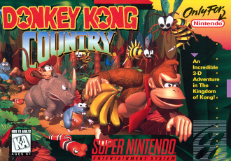

Platformer · 1994
Donkey Kong Country
Pre-rendered sprites that sold a console everyone had written off.

Cover: Wikipedia: Donkey Kong Country
Facts
- Released
- 1994-11-18
- Genre
- Platformer
- Category
- Platformer
- Platforms
- Nintendo
- Developers
- Rare Ltd.
- Publishers
- Nintendo